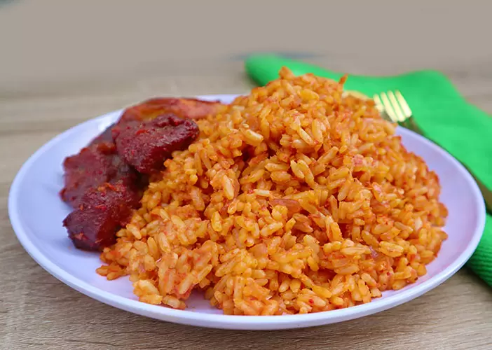

Nigerian Jollof Rice with Chicken
Home

Description
Ingredients
- 2 pounds chicken drumsticks
- 3 large onion, diced
- 4 seasoning cubes
- 2 tablespoons curry powder, or more to taste
- 2 teaspoons of dried thyme
- I cup shelled Periwinkles
- Salt to taste.
- Water(about 1.5 cups)
- 3 cups of long-grained Rice
- Palm oil
- Fresh bell pepper
- 2-3 Scotch bonnet peppers rodo
- Chicken Stock
- Scent Leaves
Steps
- Start by grinding the spices. Add them all together
(ataiko, Irugege and a cup of crayfish), blend to powder.
Blend the pepper as well.
- Wash the dried fish and remove center bones. Pour hot water over it,
wash, and set aside.
- Wash and precook the prawn; use half a cup of water,
a seasoning cube and a pinch of salt.
- Precook your meat, this is how – Wash properly and
use two seasoning cubes and a pinch of salt.
- Cook the meat until it becomes easy to chew,
and the water is almost dried.
Add salt to taste and allow another three minutes.
Set aside.
- Boil the palm fruit for 20 minutes
- Pound with a mortar and pestle, transfer into a bowl,
add water and extract the juice, don’t add too much water;
you want it thick. You will need about 7-10 cups of that palm fruit
juice for this soup. It should be thick.
- Use a sieve to strain the extract into your cooked meat.
- Allow boiling for 15 minutes with the pot half-covered.
It should be a lot thicker now.
- Add the cleaned dried fish, ground (crayfish, ataiko plus irugege),
oburunbebe stick, ground pepper, and salt to taste.
Cover and allow another 10 minutes. You can add a little water
if it is too thick.
- Add the crushed dried beletientien leaves, precooked prawn,
periwinkles, and one cube of seasoning. Stir, cover, and allow
to simmer for 3 minutes.
- Serve with Eba or Starch